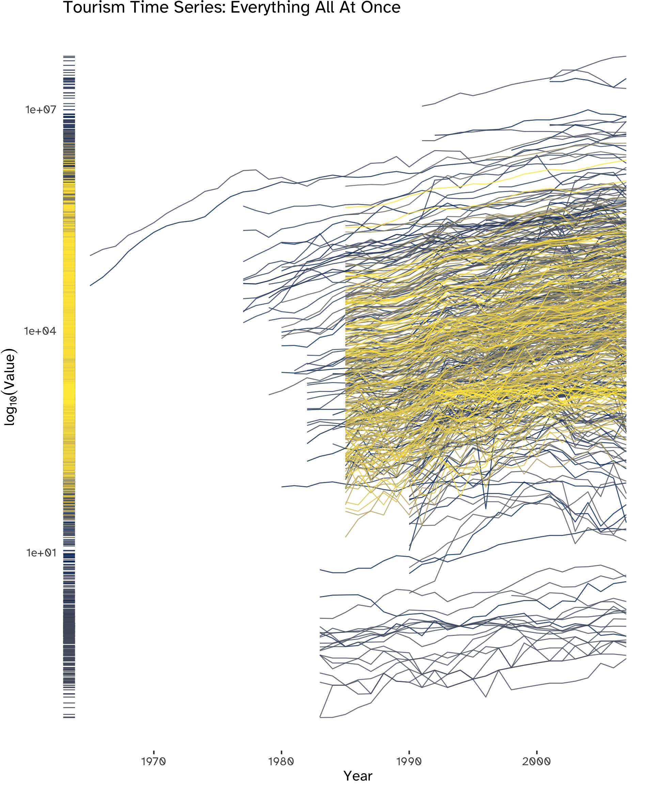
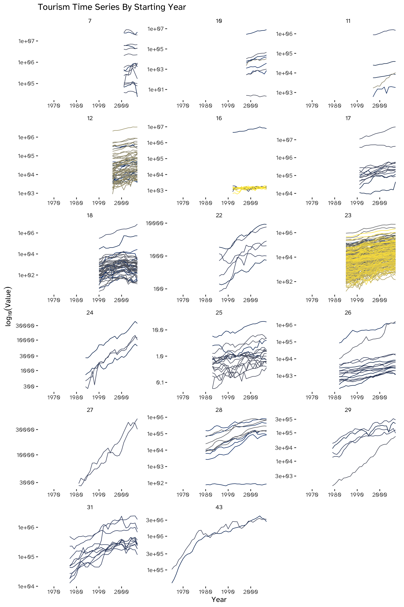
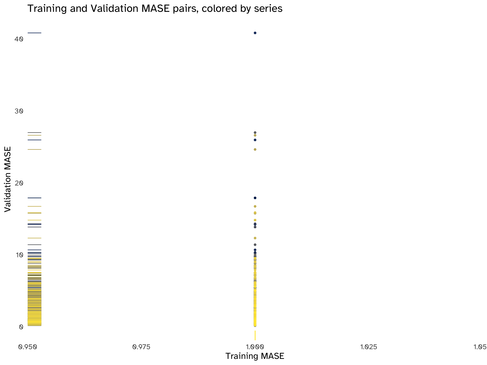

Code
libraries_list <- c(
"tidyverse",
"fpp3",
"ggthemes"
)
lapply(
X = libraries_list,
FUN = require,
character.only = TRUE
)EM1415
libraries_list <- c(
"tidyverse",
"fpp3",
"ggthemes"
)
lapply(
X = libraries_list,
FUN = require,
character.only = TRUE
)data_main <- readr::read_csv(
"Data/tourism_data.csv",
show_col_types = F
)data_main %>%
dim[1] 43 518data_main %>%
is.na() %>%
sum[1] 11668We are missing 52.38% of the observations.
tsibbletourism_full <- data_main %>%
mutate(
Year = 1965:2007
) %>%
as_tsibble(
index = Year
)tmelt <- reshape2::melt(
tourism_full,
id = "Year",
variable.name = "Identifier",
value.name = "Value"
) %>%
as_tsibble(
index = "Year",
key = "Identifier"
)tmelt %>%
dim()[1] 22274 3tmelt (Table 1) contains the melted data frame, which allows us to apply the tidy forecasting workflow to all 518 time series at once. Its main variables are:
index: Year, as in the original data frame.key: Identifier, a new categorical variable allowing us to transform the data frame into a tidy format; it consists of a set of labels that identify each time series.value: the Y_t value for each time series.In all the subsequent plots, a log_{10} transformation has been employed exclusively for representing the time series on the y-axis. This adjustment becomes necessary since the original data range1 does not permit a clear and meaningful visualization of the series when plotted together.
tmelt %>%
reframe(
"Range" = range(
Value,
na.rm = T,
finite = T
)
) %>%
mutate(
"Y" = c(
"min",
"max"
),
.before = "Range"
)Plot all the series (an advanced data visualization tool is recommended) - what type of components are visible? Are the series similar or different? Check for problems such as missing values and possible errors.
tmelt %>%
ggplot(
aes(
x = Year,
y = Value,
colour = Identifier,
group = Identifier
)
) +
geom_line(
alpha = .8
) +
geom_rug(
sides = "l",
length = unit(0.02, "npc"),
alpha = .9
) +
scale_y_log10() +
scale_color_viridis_d(
option = "cividis"
) +
labs(
title = "Tourism Time Series: Everything All At Once",
y = expression(log[10](Value))
) +
theme(
legend.position = "none",
plot.margin = margin(
1,
1,
3,
1
),
axis.ticks.y = element_blank()
)
While plotting all 518 series simultaneously may hinder the clear identification of specific details, a distinct overall upward trend is visible. Additionally, noteworthy outliers can be spotted, warranting further investigation. Furthermore, indications of cyclicality in certain series can be observed, as well as spikes and steep falls.
Using boxplots (Figure 2) allows us to focus on the distribution of values, obtaining a clearer visualization of the overall trend by de-cluttering the chart and aggregating the overall information available. We can see that, after the availability of time series increases, the process stabilizes within a range of values.
tmelt %>%
group_by(
Identifier
) %>%
ggplot(
aes(
x = Year %>% as_factor,
y = Value
)
) +
geom_tufteboxplot(
median.type = "line",
whisker.type = "point",
size = 1.5,
na.rm = TRUE
) +
scale_y_log10() +
labs(
title = "Tourism Time Series: De-Cluttering with Tufte Boxplots",
x = "Year",
y = expression(log[10](Value))
) +
theme(
legend.position = "none",
axis.text.x = element_text(
angle = 270
)
)
A check for NAs has already been made while loading data (Section 1.2) and it showed the presence of a large number of missing values, corresponding to 52.38% of all observations. This can be attributed to the difference in the initial timestamps of the series. We can categorize these series based on their respective starting years, indicating that an alternative visualization approach could be effectively implemented through this grouping method (Figure 3).
tmelt %>%
summarise(
"Available Observations" = sum(
!is.na(Value)
)
)The set of complete time series starts in 2001.
Arranging the series chronologically by their starting year not only aids in evaluating their variability but also amplifies clarity.
This grouping stresses the already noted upward trend, except for most series kickstarting in 2001 (top-left subplot of Figure 3). Another notable group of outliers can be seen in the subplot titled 182: in this group, we can spot a cluster of series in which the upward trend is inverted.
tmelt %>%
group_by(
Identifier
) %>%
mutate(
series_length = 43 - Value %>% is.na %>% sum
) %>%
ungroup() %>%
arrange(
desc(
series_length
)
) %>%
mutate(
series_length = as_factor(series_length)
) %>%
ggplot(
aes(
x = Year
)
) +
geom_line(
aes(
y = Value,
color = Identifier
)
) +
facet_wrap(
~series_length,
nrow = 6,
ncol = 3,
scales = "free"
) +
labs(
title = "Tourism Time Series By Starting Year",
y = expression(log[10](Value))
) +
scale_y_log10() +
scale_color_viridis_d(
option = "cividis"
) +
theme(
legend.position = "none"
)
Partition the series into training and validation, so that the last 4 years are in the validation period for each series. What is the logic of such a partitioning? What is the disadvantage?
train <- tmelt %>%
filter(
Year < 2004
)
validation <- tmelt %>%
filter(
Year >= 2004
)validation %>%
head(8)The logic behind partitioning the series into a training and validation set is to estimate the forecasting error: we can train a model or apply a filter to the train set and use it to estimate its performance with out-of-sample data. The main disadvantage of this approach is that we are not using all the information available to train our model; moreover, we are not computing true forecasts, therefore the accuracy measures from the residuals will be smaller.
Generate naïve forecasts for all series for the validation period. For each series, create forecasts with horizons of 1, 2, 3, and 4 years ahead (F_{t+1}, F_{t+2}, F_{t+3}, and F_{t+4}).
We can produce the forecasts by applying Equation 1:
y_{T + h \ | \ T} = y_T \tag{1}
First of all, initializing a naïve model will allow us to use R to compute both point forecasts and prediction intervals:
naive_model <- train %>%
na.omit() %>%
model(
NAIVE(
Value
)
)naive_model will contain a mable for all the series, to be used to compute both training and validation errors.
To obtain F_{t+1}, F_{t+2}, F_{t+3}, and F_{t+4}:
naive_fc <-
naive_model %>%
forecast(
h = 4
)naive_fc %>%
tail(20)Which measures are suitable if we plan to combine the results for the 518 series? Consider MAE, Average error, MAPE and RMSE.
When combining forecasting results for multiple time series it is crucial to account for the scale and potential variations across the series. The choice of measures can impact the overall assessment of forecasting accuracy.
The Mean Absolute Error (MAE) is a suitable measure to quantify the average absolute errors across all series without considering the direction of the errors. It provides a straightforward indication of the average magnitude of forecasting errors.
The Average Error3 can complement the MAE by providing a simple measure of the overall bias in the forecasting. However, it might not be suitable if positive and negative errors can cancel each other out.
The Mean Absolute Percentage Error (MAPE) is suitable for evaluating the forecasting accuracy in percentage terms, which can be particularly useful when dealing with many series of different scales. However, it is sensitive to series with small actual values.
Last but not least, the Root Mean Squared Error (RMSE) is suitable to penalize larger errors more heavily4. It provides a balance between considering both large and small errors; like the MAE, it doesn’t consider the direction of errors.
Having a very wide range of values, as seen in Table 2, the MAPE is the candidate for the most useful error measure among the ones listed5, to ensure consistency when evaluating the forecasting error across different scaled series.
For each series, compute the MAPE of the naive forecasts once for the training period and once for the validation period.
errors_training <- naive_model %>%
accuracy()This is the training MAPE for the first 10 series:
errors_training %>%
select(
Identifier,
.type,
MAPE
) %>%
head(10)errors_validation <-
accuracy(
naive_fc,
validation
)This is the validation MAPE for the first 10 series:
errors_validation %>%
select(
Identifier,
.type,
MAPE
) %>%
head(10)MAPE_comparison <- bind_rows(
errors_training[1:10, ] %>%
select(MAPE) %>%
round(., digits = 2) %>%
t() %>%
as_tibble() %>%
mutate(
Set = "Training",
.before = V1
) %>%
tail(),
errors_validation[1:10, ] %>%
select(MAPE) %>%
round(., digits = 2) %>%
t() %>%
as_tibble() %>%
mutate(
Set = "Validation"
)
)
colnames(MAPE_comparison) <- c(
"Set",
errors_training$Identifier %>%
as.character() %>% unique
%>% head(10)
)
MAPE_comparisonThe performance measure used in the competition is Mean Absolute Scaled Error (MASE). Explain the advantage of MASE and compute the training and validation MASE for the naive forecasts.
The Mean Absolute Scaled Error (MASE) serves as a robust performance metric thanks to its scale-independence. This quality makes it well-suited for the comparative assessment of forecast accuracy across diverse time series characterized by differing scales and magnitudes, such as in this dataset, accounting for the inherent scale differences among them by scaling the errors based on the training MAE from a simple forecast method.
It is an alternative to percentage errors such as the MAPE. For a non-seasonal time series, a useful way to define a scaled error uses naïve forecasts: because the numerator and denominator both involve values on the scale of the original data, scaled errors are independent of the scale of the data.
errors_training %>%
select(
Identifier,
.type,
MASE
) %>%
head(10)Since MASE indicates the effectiveness of the forecasting algorithm for a naïve forecast, a value greater than one 1 indicates that the algorithm is performing poorly compared to the naïve forecast, and vice-versa: hence, since we have been computing the naïve MASE of in-sample data, it is equal to 1 for all time series in our training dataset.
errors_validation <-
accuracy(
naive_fc,
tmelt
)This is the validation MASE for the first 10 series:
errors_validation %>%
select(
Identifier,
.type,
MASE
) %>%
head(10)MASE_comparison <- bind_rows(
errors_training[1:10, ] %>%
select(MASE) %>%
round(., digits = 2) %>%
t() %>%
as_tibble() %>%
mutate(
Set = "Training",
.before = V1
) %>%
tail(),
errors_validation[1:10, ] %>%
select(MASE) %>%
round(., digits = 2) %>%
t() %>%
as_tibble() %>%
mutate(
Set = "Validation"
)
)
colnames(MASE_comparison) <- c(
"Set",
errors_training$Identifier %>%
as.character() %>%
unique %>%
head(10)
)
MASE_comparisonCreate a scatter plot of the MAPE pairs, with the training MAPE on the x-axis and the validation MAPE on the y-axis. Create a similar scatter plot for the MASE pairs. Now examine both plots. What do we learn? How does performance differ between the training and validation periods? How does performance range across series?
ggplot(
data = MAPE_pairs,
aes(
x = Training_MAPE,
y = Validation_MAPE,
color = Series_Identifier
),
) + geom_point(
alpha = .8
) +
geom_rug() +
geom_abline(
slope = 1,
color = "grey80",
linetype = "dashed"
) +
labs(
title = "Training and Validation MAPE pairs, colored by series",
x = "Training MAPE",
y = "Validation MAPE"
) +
scale_color_viridis_d(
option = "cividis"
) +
theme_updater
ggplot(
data =
MASE_pairs,
aes(
x = Training_MASE,
y = Validation_MASE,
color = Series_Identifier
),
) + geom_point(
) +
geom_rug() +
labs(
title = "Training and Validation MASE pairs, colored by series",
x = "Training MASE",
y = "Validation MASE"
) +
scale_color_viridis_d(
option = "cividis"
) +
theme_updater
We can add some jitter to better visualize the points:
ggplot(
data =
MASE_pairs,
aes(
x = Training_MASE,
y = Validation_MASE,
color = Series_Identifier
),
) + geom_jitter() +
geom_rug() +
labs(
title = "Training and Validation MASE pairs, colored by series",
x = "Training MASE",
y = "Validation MASE"
) +
scale_color_viridis_d(
option = "cividis"
) +
ggthemes::theme_tufte(
base_size = 16,
base_family = custom_typeface,
ticks = F
) +
theme(
legend.position = "none",
axis.text.x = element_blank()
)
There is no apparent pattern in all the scatterplots. The distribution of MAPE and MASE pairs is highly asymmetrical and skewed towards lower values, but the performance of the naïve method varies across series. In most cases, the points are above the 45-degree line, indicating that, on average, the performance is worse on the validation set compared to the training set.
There are some evident outliers, corresponding to the same series for both accuracy measures; these outliers mostly fall above the bisection line, confirming a deterioration in performance across sets, which is a tell-tale sign of overfitting. In simple terms, the chosen model is not on average generalizing well, hindering its predictive abilities.
A final word on the MASE pair plots: since the entire training set has an accuracy score of 1 for all series (as explained in Section 2.6.1, we are scaling naïve forecasts by the same naïve forecasts), all points align on the same vertical line, making interpretation challenging. Introducing some noise allows some separation and exposes the absence of patterns. This distribution, on the y-axis, reveals two important points: first of all, most predictions on the validation set center around 0, but in numerous series the forecasting method is underperforming. Secondly, outliers are clustered in groups: to fine-tune the algorithm, insights could be obtained to address this overall loss of accuracy by examining the series by these groups and choosing a more appropriate forecasting method.
The competition winner, Lee Baker, used an ensemble of three methods:
- Naive forecasts multiplied by a constant trend6.
- Linear regression.
- Exponentially-weighted linear regression.
Starting from Equation 1 and introducing a constant trend multiplier, denoted as k7, we can express the equation for naïve forecasts multiplied by this constant trend as follows:
y_{T + h \ | \ T} = y_T \times (1 + k)^h \tag{2}
h, as usual, is the number of years in the future we want to forecast. This formulation represents the extension of naïve forecasts, incorporating a constant trend multiplier, thereby accounting for a consistent trend in the time series data.
The rationale would be to enhance the performance of naïve forecasts, a benchmark method, to apply them with real data that show a pronounced trended behaviour. While some other approaches can describe an average change over time9, empirical and domain knowledge indicate that, in certain instances, the temporal evolution can be adequately represented by a constant: consequently, mixing a random walk behaviour with a constant trend aims at modeling the data more closely.
In the absence of any predictors in the data, a standard strategy involves formulating an AR(p) model to capture dependencies of Y_{T + h | T} on its past:
y_t = c + \phi_1 y_{t - 1} + \phi_2 y_{t - 2} + ... + \phi_p y_{t - p} + \epsilon_t \tag{3}
However, the time series are not stationary: this model would necessitate transformations to remove the trend, resulting in the loss of essential information crucial for accurate forecasting. Consequently, an alternative approach is to devise a simple linear model incorporating an independent trend variable:
y_t = \beta_0 + \beta_1 t + \epsilon_t \tag{4}
This latter methodology appears to align more consistently with the overall information available about the series and the models employed by the contest winner.
ts_list <- c("Y1", "Y2", "Y3", "Y4", "Y5")
ts_trend_fit <- tmelt %>%
filter(
Identifier %in% ts_list) %>%
model(
TSLM(
Value ~ trend()
)
)ts_trend_fit %>%
report() %>%
select(
Identifier,
p_value,
r_squared,
AICc
)ts_trend_fit %>%
forecast(
validation
) %>%
accuracy(
tmelt
) %>%
select(
Identifier,
MAPE,
MASE
)“I examined fitting a polynomial line to the data and using the line to predict future values. I tried using first through fifth-order polynomials to find that the lowest MASE was obtained using a first-order polynomial (simple regression line). This best-fit line was used to predict future values. I also kept the R^2 value of the fit for use in blending the results of the prediction.”
What are two flaws in this approach?
A polynomial fitting is useful when the relationship between predictor and response is not linear: in such instances, the Ordinary Least Squares (OLS) estimator still can be used allowing the derivation of a fitting capable of accommodating non-linear relationships, while preserving linearity in the parameters. Adding polynomial terms at random leads to overfitting in most cases, leading to the excess variance that does not generalize well to out-of-sample data. Moreover, considering our context of a straightforward trended linear model, the incorporation of higher-order polynomial trends may compromise interpretability.
While the R^2 represents the portion of explained variability by the model, it is based on the sum of squares, which is inconsistent with the given error statistic, the MASE; as written in Section 2.4, it penalizes larger errors more heavily, while the MASE considers the average magnitude of forecasting errors.
Last but not least, assuming a simple univariate trended linear model, it is also equivalent to the squared correlation between the dependent variable and the predictor10, so it is not a proper weight to combine forecasts.
We could implement two different exponential smoothings that include a Trend component. Viable candidates are Holt’s linear method (A, N) and Additive damped trend method (A_d, N): their performance should be tested against both the validation and test sets to choose the most appropriate.
Automation of model selection and amalgamation could be achieved through the adoption of a “loss function”-centered approach, constructed upon the ensemble amalgamation of diverse methods. The allocation of weights to each method’s forecast could be fine-tuned by assessing their performance within the parameter space on the validation set, employing a weighted least squares method.
To find these hyper-parameter estimates numerically, then, we could use different approaches, ranging from a linear combination of weights to a more complex deep neural network, capable of receiving a matrix containing forecasts from various ensemble methods as input, which would enable the learning of optimal weights through backpropagation, facilitated by a properly calibrated activation function. In both cases, learning the model would be equivalent to setting the proper mix of forecasts.
In other words, a machine learning-based approach might prove helpful in choosing the best combination of forecasts, to minimize the MASE of the validation set; nevertheless, caution should be used as it would introduce another potential source of overfitting.
However:
“While there has been considerable research on using weighted averages, or some other more complicated combination approach, using a simple average has proven hard to beat.”11.
This simple average could work as a benchmark to evaluate the amalgamation method used to build the ensemble forecast.
The main difference in a real-world scenario is the complete absence of prediction intervals and any interest in quantifying uncertainty.
As cleverly stated by the contest winner:
“If the test set includes data from 2008–2009, I’m speculating that depressed tourism numbers as a result of the global economic recession could have caused a significant difference in the trends.”
This stresses the importance of understanding the underlying assumptions and the power of using models instead of filters, or in combinations with them.
Gaming a specific statistic is not a viable tool for general or specific purpose forecasting in a real-world scenario: on the one hand because we might be interested in a different question than the one that a minimized MAPE is answering, or in forecasting for longer time windows; on the other hand, relying solely on the point forecast offers a restricted perspective, neglecting the broader landscape of characteristics such as volatility that may be of interest. For instance, the necessity of computing prediction intervals requires a tailored approach. The amalgamation method applied for the ensemble forecast needs to be taken into account, coupled with the specifics of the computational tools enlisted in implementing the solution12. Merely optimizing a singular statistic fails to account for the multi-faceted demands of comprehensive forecasting.
A last remark is that in a real-world scenario, a forecaster is dealing with the unavailability of such a constant feedback loop, as the contest winner had, of submitting his results and observing a test MAPE on the Kaggle leaderboard. It is often the case that the chances to submit forecasts or act on them face time constraints and the absolute absence of this kind of feedback loop, and this implies the need for more robust planning and instruments, built upon the impossibility of observing the out-of-sample data and any related statistic.
To summarise, forecasting in a real-world context is not only about minimizing errors, but also about understanding the uncertainty in the phenomenon, to better assess the forecasting performance consistently and over time, and not on a specific data “snapshot” taken in a specific window.
Time series starting in 1989.↩︎
Defined as the mean of all individual errors.↩︎
Outliers might therefore skew its measurement.↩︎
Although scaled errors are not considered and could address the issue of evaluating the performance of series having a wide range, while not being sensitive to small values.↩︎
Global/local trend: “globally tourism has grown at a rate of 6% annually.”↩︎
In the case of an annual growth rate of 6%, k = 0.06.↩︎
Hint: think empirical and domain knowledge.↩︎
E.g.: the drift method.↩︎
In a multivariate model, the R^2 corresponds to the squared correlation between y_t and \hat y_t, so this point still stands.↩︎
Hyndman, R. J., & Athanasopoulos, G. (2018). Forecasting: principles and practice. OTexts.↩︎
One of the solutions proposed earlier, a neural network, would probably pose the same overfitting issues and often outputs overconfident intervals.↩︎